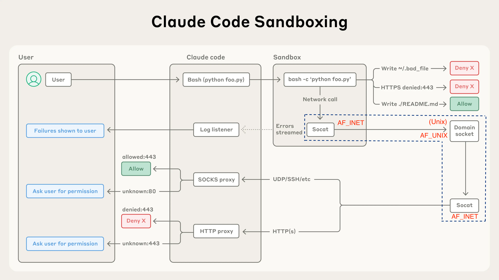

Outer isolation, infrastructure layer. Coder is the fixed choice;
runsc)Inner isolation. Restricts what the agent can read, write, and reach over the network within the workspace. Three viable open-source options here.
Traditional permission-based security requires constant user approval for bash commands. While this provides control, it can lead to:
Sandboxing addresses these challenges by:
Sandboxing limits the potential damage from:
Certain sensitive files and directories are always blocked from writes, even if they fall within an allowed write path. This provides defense-in-depth against sandbox escapes and configuration tampering.
Always-blocked files:
.bashrc, .bash_profile, .zshrc, .zprofile, .profile.gitconfig, .gitmodules.ripgreprc, .mcp.jsonAlways-blocked directories:
.vscode/, .idea/.git/hooks/, .git/config
Linux: uses bubblewrap with bind mounts, marking directories as read-only or read-write based on configuration.
# On disk: /data/notes.txt contains "hello"
mkdir /mnt/ro
mount --bind -o ro /data /mnt/ro
cat /mnt/ro/notes.txt # "hello" ✓
echo "x" >> /mnt/ro/notes.txt # ✗ EROFS — kernel rejects writes via this mount
echo "x" >> /data/notes.txt # ✓ writes succeed via the original path
cat /mnt/ro/notes.txt # "hello\nx" — the change is visible here tooNetwork traffic is routed through proxy servers running on the host.
Linux: requests are routed via the filesystem over a Unix domain socket. The network namespace of the sandboxed process is removed entirely, so all network traffic must go through the proxies running on the host (listening on Unix sockets that are bind-mounted into the sandbox).
┌────────── INSIDE SANDBOX (empty netns + lo only) ──────────┐
│ │
│ curl ──AF_INET──► 127.0.0.1:3128 │ ← yes, AF_INET still
│ │ │ exists here, but ONLY
│ sandbox-socat │ to the loopback
│ │ │
│ AF_UNIX │ ← socat translates
│ │ │
│ /run/srt/http.sock ◄── bind-mounted ───┼─┐
└────────────────────────────────────────────────────────────┘ │
│ same .sock file
┌──────────── ON THE HOST (full netns, NICs) ────────────────┐ │
│ │ │
│ /run/srt/http.sock ◄───────────────────┼─┘
│ │ │
│ AF_UNIX │
│ │ │
│ host-socat │
│ │ │
│ AF_INET ─────► proxy ─────► internet │ ← back to AF_INET
│ │ for the real network
└────────────────────────────────────────────────────────────┘